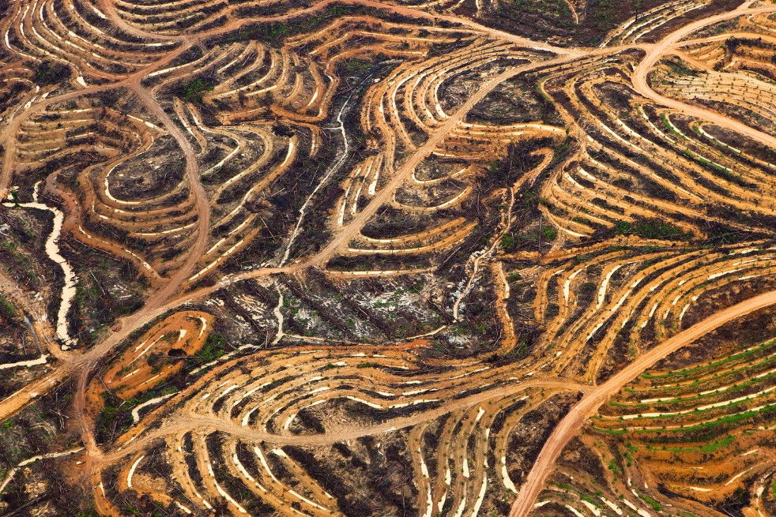
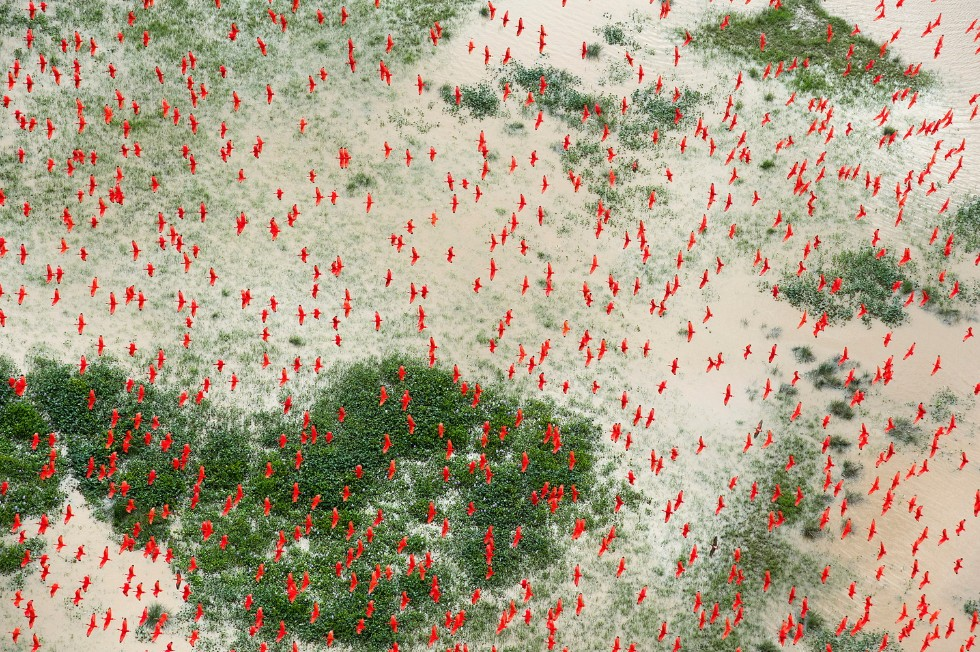
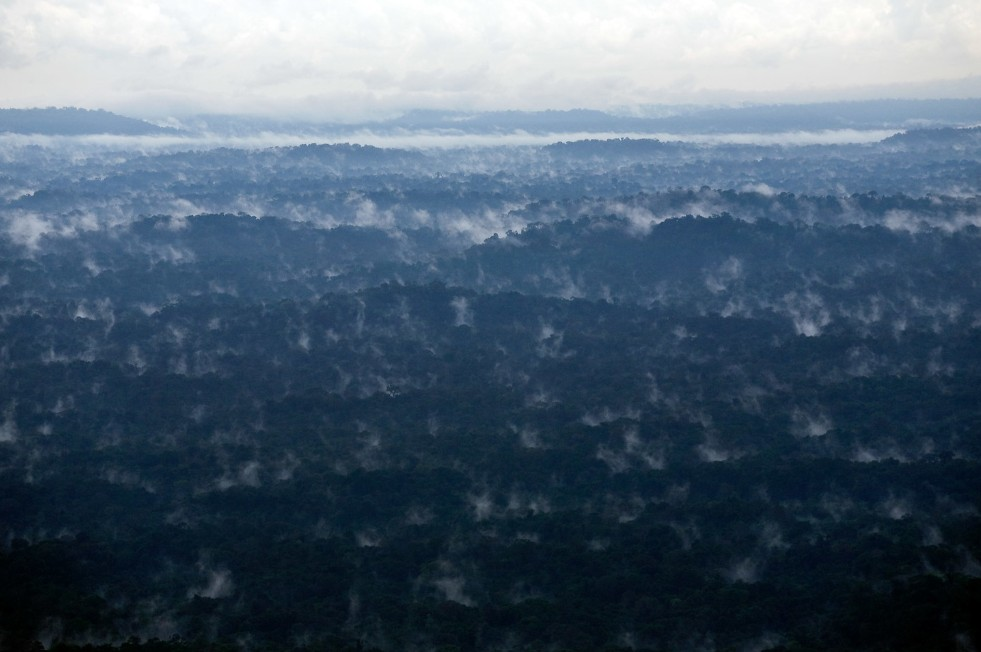

Forests
|
Pulmones en llamas |
| Tomó esta imagen de un incendio provocado por el hombre, quemaron una parte de la selva tropical a 20Km del río Amazonas y a 40Km de un poblado cercano conocido como Manaos, la razón del incendio provocado es facilitar la creacion de tierras agrícolas y pastizales para el ganado. | |
| Etiquetas: #2020 #Brasil #Rio Amazonas #Aérea |
|  | Cicatrices de la Tierra |
| En esta imagen se ve las nuevas plantaciones de palma aceitera que se han establecido en la selva tropical de Borneo, arrasando con gran parte de la vegetación nativa | |
| Etiquetas: #Indonesia #Aérea |
|  | Infierno en el bosque |
| Incendio en el Amazonas, este incendio provocado arraso con una zona de la selva Amazonica, con el unico fin de "limpiar" el terreno para la implementacion de terrenos con fines de explotacion agricola y ganadera | |
| Etiquetas: #SelvaAmazonica #Aérea #Brasil #2008 #IncendioForestal |
 |
Cadaver de la naturaleza |
| En esta imagen se ve un arbol de castaña destruido, aunque la ley Brasileña protege estos arboles, la deforestacion ilegal sigue siendo un problema en la selva Amazonica. | |
| Etiquetas: #SelvaAmazonica #Aérea #Brasil #Deforestacion |
|  | Un momento de calma |
| Después de tantas imagenes de destrucción, esta fotografía muestra un rayo de esperanza. En esta imagen se ve como la naturaleza ayuda a la selva Amazonica proporcionando lluvia y agua a sus animales y plantas. | |
| Etiquetas: #SelvaAmazonica #Aérea #Brasil #Lluvia |